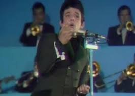
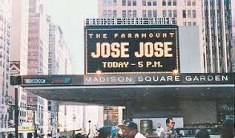
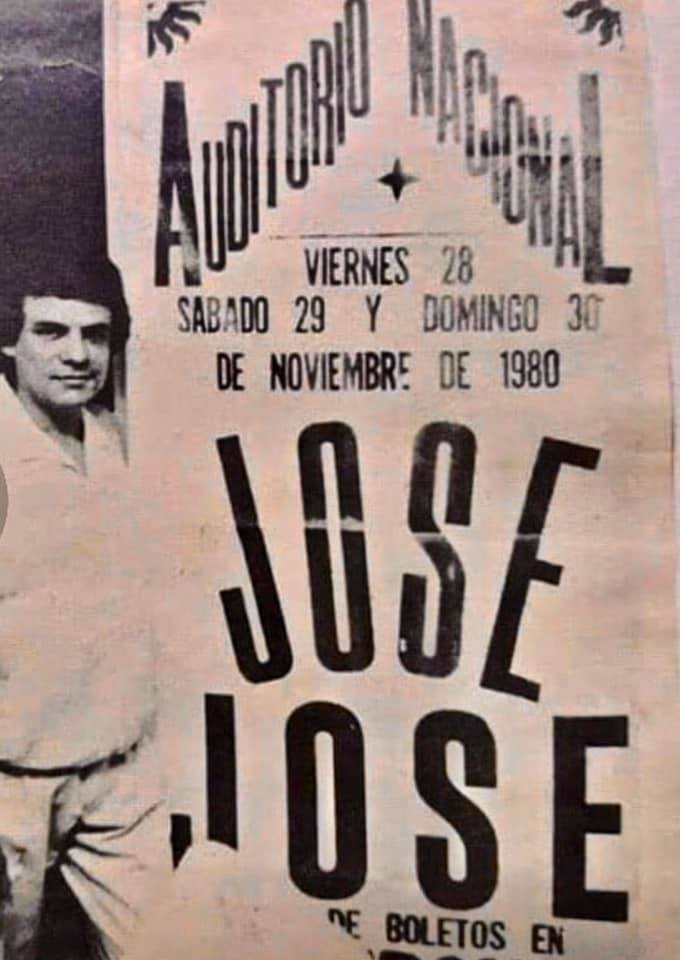
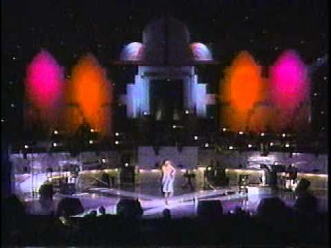

| Concierto o gira | Información | Imagen |
|---|---|---|
| II Festival de la Canción Latina | Evento del 15 de marzo de 1970 en el Teatro Ferrocarrilero de Ciudad de México. José José interpretó por primera vez "El Triste", recibió ovación de pie y quedó en tercer lugar. Este concurso fue precursor del Festival OTI y marcó su consagración internacional. |  |
| Temporadas en el Madison Square Garden y Radio City Music Hall (Nueva York, década de los 80) | Estas presentaciones representan la cumbre de su estrellato internacional tras el éxito masivo del álbum Secretos . En estos emblemáticos recintos neoyorquinos, José José logró agotar todas las entradas de manera recurrente, lo que le valió el apodo de "Mr. Sold Out" . Estos conciertos fueron clave para consolidar su hegemonía en el mercado hispano de los Estados Unidos y llevar su música a un nivel de prestigio global |  |
| Temporadas de récords en el Auditorio Nacional (Ciudad de México, décadas de los 80 y 90) | José José se convirtió en el máximo exponente del romanticismo en México al conquistar el Auditorio Nacional con récords de asistencia . Durante los años 90, realizó múltiples temporadas con llenos absolutos, alcanzando cifras de audiencia que muy pocos artistas de balada habían logrado en solitario . Destaca también su concierto de 41 aniversario en 2004, que fue su última gran presentación en este recinto, celebrada con un lleno total a pesar de sus evidentes problemas vocales . |  |
| Homenaje por el 25º Aniversario en "Siempre en Domingo" (1990) | Esta fue una de las presentaciones televisadas más importantes y vistas en la historia de México . Se trató de una emisión especial de más de seis horas dedicada exclusivamente a su trayectoria, donde José José compartió el escenario con grandes figuras de la música como Vicente Fernández, Armando Manzanero, Marco Antonio Muñiz y Libertad Lamarque . Este evento no solo fue un éxito de audiencia, sino que funcionó como un reconocimiento nacional a su legado como "El Príncipe de la Canción" . |  |